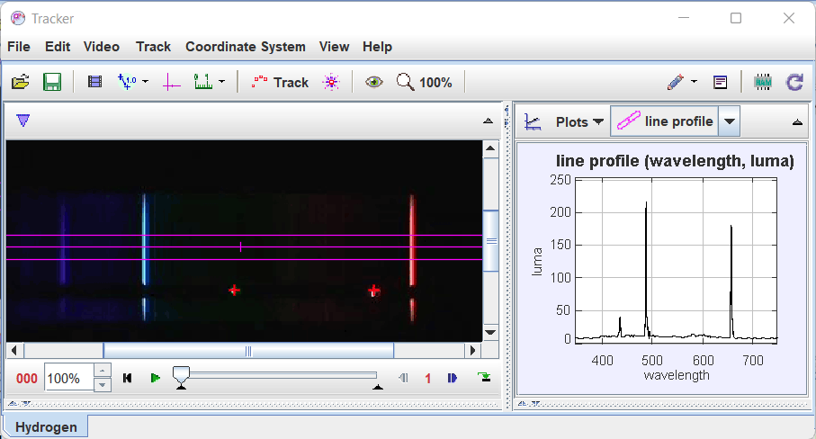

Tracker is a free video analysis and modeling tool built on the Open Source Physics (OSP) Java framework. Features include object tracking with position, velocity and acceleration overlays and graphs, special effect filters, multiple reference frames, calibration points, line profiles for analysis of spectra and interference patterns, and dynamic particle models. It is designed to be used in introductory college physics labs and lectures.
To start using Tracker, see getting started.